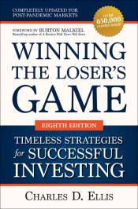

Winning the Loser's Game 8e
AZW3 · EPUB · PDF
|  | |
| McGraw Hill LLC | |
| 2021 | |
The definitive guide to long-term investing success—fully updated to address the realities of today’s markets Technology, information overload, and increasing market dominance by expert investors and computers make it harder than ever to produce investing results that overcome operating costs and fees. Winning the Loser’s Game reveals everything you need to know to reduce costs, fees, and taxes, and focus on long-term policies that are right for you. Candid, short, and super easy to read, Winning the Loser’s Game walks you through the process of developing and implementing a powerful investing strategy that generates solid profits year after year. In this eagerly awaited new edition, Charles D. Ellis applies the expertise developed over his long, illustrious career. This updated edition includes: NEW CHAPTERS on bond investing, how investor behavior affects returns, and how technology and big data are challenging traditional investment decisions NEW RESEARCH and evidence supporting the case for indexing investment operations NEW INSIGHTS into the role of governance, developing a comprehensive saving strategy, and the power of regression to the mean Companies change, and markets and economies go up and down—sometimes a lot. But the core principles of successful investing never change—and never will. That’s why, when you’ve read this book, you’ll know all you really need to know to be successful in investing. With Winning the Loser’s Game, you have everything you need to identify your unique investment objectives, develop a realistic and powerful investment program, and drive superior results.